Dans ce module, nous allons décrire les principaux équipements auxiliaires que l’on rencontre sur un site d’incinération des déchets ménagers. Par exemple, les équipements de production d’air comprimé assurent le fonctionnement des vannes de régulation ainsi que l’outillage pneumatique.
Les équipements du réseau de vapeur assurent le transport, la purge, le sectionnement et la régulation de la circulation de la vapeur. D’autres équipements, les groupes électrogènes et les alimentations sans interruption, comme les onduleurs, assurent la production d’énergie électrique des principaux organes de sécurité, même en cas de panne du réseau EDF. D’autres équipements réservés à la lutte contre l’incendie ont également un rôle très important.
À la fin de ce module, vous pourrez identifier ces équipements, expliquer, leur utilité et leur principe de fonctionnement. Vous pourrez ainsi assurer au mieux l’entretien et la surveillance de base.
L'air est utilisé comme fluide de travail pour les applications suivantes :
L’air comprimé est disponible en grande quantité car il est pris à l’atmosphère. Il peut être stocké facilement. Il n’a pas besoin d’être recyclé, une fois utilisé il est rejeté à l’air libre.
Il convient parfaitement pour les travaux de nettoyage à l’intérieur des fours d’incinération. Il peut être utilisé quelle que soit l’ambiance de travail, par exemple dans des atmosphères explosives.
Un réseau de production d'air comprimé est composé des éléments suivants :
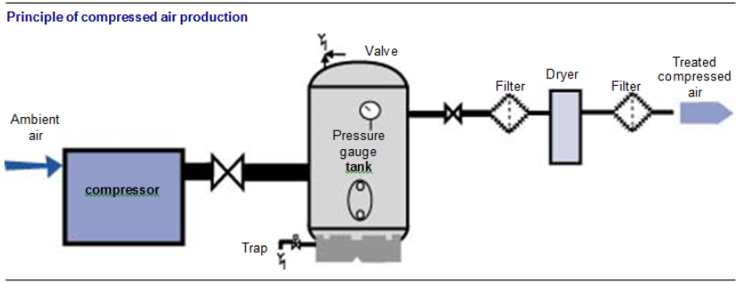
Fig. 1
L’air comprimé est aspiré à l’extérieur par un réseau de conduit. Il est préfiltré pour enlever les poussières les plus grosses. Il est ensuite comprimé dans le compresseur. Il est stocké dans un réservoir. Il est ensuite filtré, déshydraté par le sécheur, puis à nouveau filtré avant d’être distribué jusqu’au lieu d’utilisation.
Le compresseur d’air doit assurer la production d’air sous un débit et une pression suffisante pour alimenter les équipements pneumatiques. Il existe plusieurs manières de produire de l’air comprimé, par le biais d’unités décentralisées situées à proximité de l’utilisateur ou par le biais d’unités centralisées dans un local technique, qui nécessitent la pose de canalisations de distribution jusqu’à l’utilisateur.
Le compresseur présenté ci-dessus est une unité décentralisée. Il est transporté sur le lieu d’utilisation de l’air comprimé. Il est composé d’un compresseur à piston et d’un réservoir intégré. Il existe aussi des modèles pour lesquels le réservoir est séparé.
Le compresseur présenté ci dessus est une unité centralisée. Il est placé dans un local technique. L’air comprimé produit est acheminé par un réseau de canalisations.
Le débit des compresseurs est déterminé en fonction de la consommation d’air comprimé des outillages et de l’instrumentation.
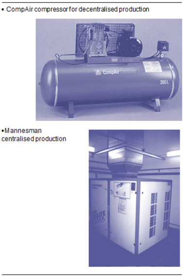
Fig. 2
En règle générale, la pression d’utilisation des outils est de l’ordre de 7 bars. Le compresseur fournira donc l’air comprimé à une pression légèrement supérieure. Il existe plusieurs types de compresseurs :
Les compresseurs sont dits volumétriques car ils compriment une quantité d’air fixe à chaque tour de moteur. La compression est liée à la variation de volume d’une enceinte où est emprisonné l’air.
Compresseurs à pistonsL’air est comprimé dans un cylindre par un piston. Ce dernier est animé d’un mouvement de va et vient grâce à un système de bielle et de vilebrequin. Le cylindre est équipé de clapets d’admission et de refoulement d’air.
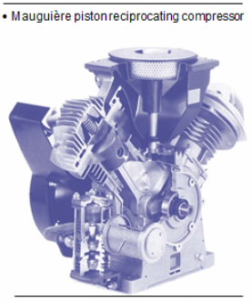
Fig. 3
Dans le schéma ci-contre, on retrouve la phase d’aspiration et la phase de refoulement.
À gauche, le piston descend, le clapet d’admission s’ouvre. L’air entre dans la chambre de compression.
À droite, le piston remonte, le clapet d’admission se ferme tandis que le clapet de refoulement s’ouvre, l’air est refoulé vers l’extérieur.
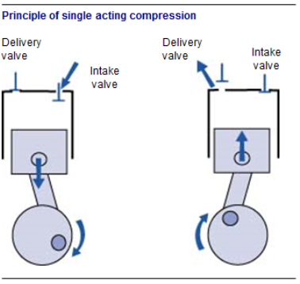
Fig. 4
On rencontre de nombreux types de compresseurs à piston : le compresseur simple effet et le compresseur double effet. Dans le compresseur simple effet, la compression n’a lieu qu’à une extrémité du cylindre. Dans le compresseur double effet, la compression a lieu aux deux extrémités du cylindre.
Lorsque la pression d’utilisation est de l’ordre de 7 bars, on utilise des compresseurs à deux étages, ou bi-étagés. L’air est comprimé dans le premier étage à une pression de 1 bar, puis il est envoyé dans un second étage où il est comprimé à sa pression finale.
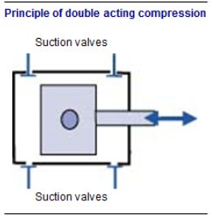
Fig. 5
Compresseurs à visLe compresseur a deux vis s'entrecroisant. Lorsque les vis tournent, l'air est aspiré, comprimé et envoyé.
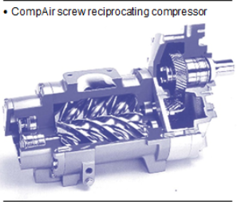
Fig. 6
Compresseurs centrifugesIls fonctionnent selon le même principe que les pompes centrifuges. Une roue à aubes tourne à grande vitesse. L’air, admis parallèlement à l’axe de rotation, en contact avec la roue, est entraîné en rotation à grande vitesse. Il est ensuite envoyé vers la canalisation de refoulement où l’énergie cinétique (due à la vitesse) est transformée en énergie de pression.
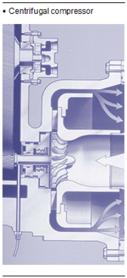
Fig. 7
Fonctionnement des compresseursLorsque l’on comprime de l’air, il résulte un échauffement important qui peut être dommageable pour le compresseur si on ne le refroidit pas.
Le compresseur est refroidi par l’air pris dans le local où il est placé. Un système de batterie d’échange air/air permet de refroidir l’air comprimé ainsi que l’huile de lubrification des équipements du compresseur.
On surveillera donc les températures de l’air comprimé et de l’huile selon les recommandations du fabricant. Les températures sont visibles sur des indicateurs placés en façade du compresseur.
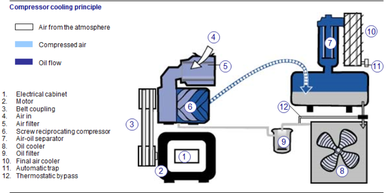
Fig. 8
L'air atmosphérique est composé des éléments suivants :
Sans aucun traitement de l’air, l’eau en se condensant corrode les canalisations en acier. Il se forme de la rouille, dommageable pour les équipements pneumatiques. La présence des particules solides encrasse les équipements, diminue leurs performances et provoque une usure prématurée.
Il faut alors filtrer l’air pour éliminer les particules solides (rouille, calamine…) et l’eau condensée. Cette fonction est assurée par des filtres à air. En bas de ces filtres, on trouve des systèmes de purges automatiques ou manuelles qui permettent de chasser les impuretés et les particules filtrées.
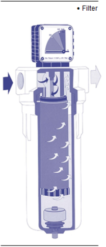
Fig. 9
Filtre séparateur d'eauL’air pénètre dans le filtre et prend un mouvement giratoire (de rotation). Les particules solides et liquides plus lourdes que l’air sont projetées contre les parois de la cuve et se déposent au fond. L’air passe ensuite au travers un matériau filtrant qui retient les impuretés.
L’eau condensée et les impuretés peuvent être purgées en bas de la cuve par un purgeur manuel ou par un purgeur automatique à flotteur.
Filtres à huileL'huile ou les aérosols de brouillard d'huile ne peuvent être arrêtés que par des filtres submicroniques et coalescents. L'huile du compresseur est généralement piégée en sortie de production d'air comprimé. Cette huile a tendance à obstruer le réseau de distribution et est inadaptée à la lubrification des outils et équipements pneumatiques.
Le lubrificateur injecte un brouillard d’huile dans l’air comprimé. Il permet de lubrifier les pièces mobiles des équipements pneumatiques. Une huile spéciale est introduite en bout de réseau, juste avant les équipements pneumatiques.
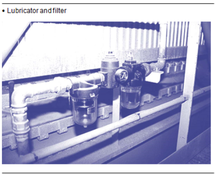
Fig. 10
Pour améliorer la lubrification par brouillard d’huile, il faut éviter d’utiliser des flexibles trop longs entre le système de lubrification et l’équipement. En effet, le brouillard d’huile disparaît. Les fabricants recommandent une longueur maximale de 10 mètres.
Les filtres classiques ne peuvent arrêter la vapeur d’eau. Le rôle du sécheur est donc de capter la vapeur d’eau contenue dans l’air. La quantité de vapeur à condenser est variable selon les conditions météorologiques. L’air est plus sec en hiver qu’en été.
Un air à température de 20 °C à pression atmosphérique peut contenir jusqu’à 15 grammes de vapeur d’eau ; un air à 0 °C, 3,5 grammes.
Il existe deux types de séchoirs :
Les sécheurs par réfrigération provoquent la condensation de la vapeur d’eau. Le principe consiste à refroidir l’air humide en dessous de la température de rosée, ou température de condensation.
L’air passe sur un échangeur froid. La réfrigération est obtenue comme dans les réfrigérateurs grâce à un fluide frigorigène.
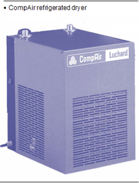
Fig. 11
Sécheurs par adsorptionLes sécheurs sont constitués de deux réservoirs contenant un produit absorbant la vapeur d’eau (oxyde d’aluminium ou sels, par exemple).
L’air comprimé est séché en traversant le réservoir. Lorsque le produit est saturé en eau, il faut le régénérer. Il existe des régénérations dites avec chaleur ou sans chaleur.
Sur le sécheur avec régénération sans chaleur, on fait circuler une faible quantité d’air sec à travers le réservoir à régénérer. Cet air, provenant du réservoir voisin, absorbe l’eau puis est évacué à l’extérieur.
Sur le sécheur à régénération par chaleur, une très faible quantité d’air sec est introduite. La régénération est en partie assurée par le chauffage du produit absorbant appelé aussi « dessiccant ».
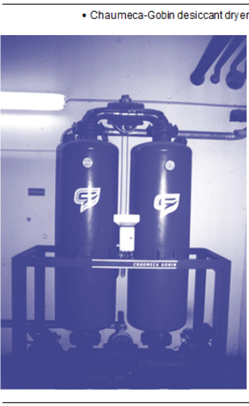
Fig. 12
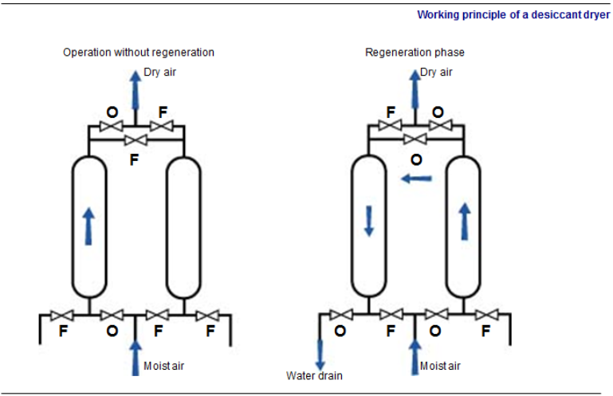
Fig. 13
Le réservoir constitue une réserve d’air comprimé. Il sert :
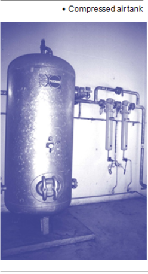
Fig. 14
Ils sont généralement équipés des composants suivants :
Les canalisations de distribution sont réalisées en métal (acier galvanisé) ou en matière plastique.
Les purgeurs permettent d’évacuer automatiquement les condensats produits dans les canalisations et dans les corps de chauffe. Quand la vapeur cède sa chaleur latente, elle se condense. Cette condensation se produit dans deux cas de figure.
Les purgeurs se trouvent dans deux situations principales :
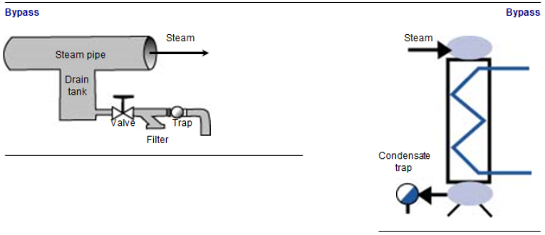
Fig. 15
Principes de fonctionnement des purgeursLes purgeurs travaillent de trois manières :
Les purgeurs peuvent être classés en trois familles :
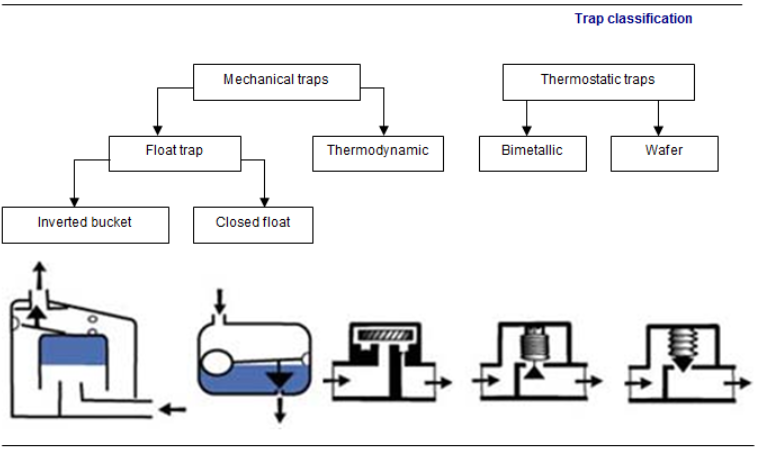
Fig. 16
Les purgeurs thermostatiquesLeur principe de fonctionnement est basé sur la température du fluide dans le purgeur. Il existe deux sous-catégories principales de purgeurs thermostatiques :
Les purgeurs thermostatiques bimétalliquesDans les purgeurs thermostatiques bimétalliques l’information de température est captée par des ensembles de deux métaux ne se dilatant pas de la même façon.
Lorsque les condensats, plus froids que la vapeur, sont piégés par le purgeur, la température chute au niveau du bilame. Ce dernier se rétracte et soulève le clapet qui laisse échapper les condensats. La vapeur peu à peu remplace les condensats et réchauffe le bilame qui se dilate et obture l’orifice d’évacuation.
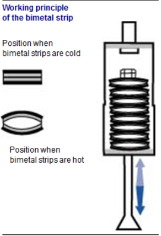
Fig. 17
Les purgeurs thermostatiques à capsule ou à souffletDans les purgeurs thermostatiques à capsule, la prise d’information de température est effectuée par une capsule remplie d’un fluide qui se dilate en fonction de la température.
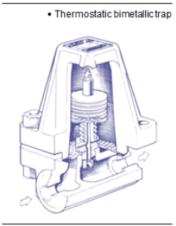
Fig. 18
Pièges à Les purgeurs mécaniques à flotteurs
Le principe de fonctionnement est basé sur le niveau de liquide dans le purgeur ou la différence de densité entre la vapeur et le condensat. Il existe deux sous-catégories principales de purgeurs à flotteurs :
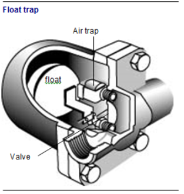
Fig. 19
Les purgeurs à flotteurs fermésLeur principe de fonctionnement est assez simple : le liquide dans le corps du purgeur fait flotter une boule, attelée par un bras de levier à un orifice d’obturation. Lorsque du liquide est présent dans le purgeur, le flotteur se lève et l’orifice s’ouvre permettant d’évacuer le condensat.
Ce type de purgeur permet d’évacuer le condensat dès son apparition, quelle que soit sa température. En revanche, ce purgeur ne fait pas la différence entre l’air et la vapeur. Restant fermé en présence de gaz, il peut en résulter un blocage du système sur lequel il est implanté par bouchon d’air. Dans le cas où des bouchons d’air sont à craindre, il est souhaitable de lui adjoindre un petit purgeur thermostatique.
Les purgeurs à flotteurs inversés ouvertsLe flotteur en forme de cloche est tourné vers le bas. Dans le fond de la cuvette, une petite quantité de condensats assure un joint d’eau. Si des condensats arrivent, le flotteur reste en position basse et l’orifice supérieur permet de les évacuer. Si de la vapeur arrive, elle se retrouve sous la cloche et la fait monter, créant un déplacement vers le haut. Le clapet lié au flotteur par une biellette assure la fermeture de l’orifice de sortie. Un petit trou est percé à la partie supérieure de la cloche pour permettre d’évacuer l’air qui pourrait éventuellement s’y trouver et engendrerait le blocage du système.
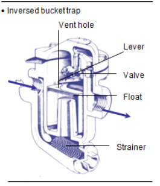
Fig. 20
Pièges Les purgeurs mécaniques thermodynamiques
Le purgeur analyse la vitesse de passage du fluide. S’il s’agit de liquide, la vitesse est relativement faible ; s’il s’agit de gaz ou de vapeur, la vitesse est élevée. Cette augmentation de vitesse rapproche alors le disque de son siège et ferme le passage du fluide.
Quand le purgeur laisse passer le fluide, les parties supérieures et inférieures du disque sont soumises à la même pression. Les surfaces prises en considération au-dessous et au-dessus du disque étant les mêmes, il n’en résulte aucun déplacement.
Quand le purgeur se ferme, il enferme en partie supérieure et inférieure la pression de la vapeur ; cette pression s’exerçant sur des surfaces différentes, la force est plus importante sur le dessus du disque.
C’est cette force qui permet au purgeur de rester fermé jusqu’à ce que la pression sur le dessus du disque baisse par le refroidissement de la vapeur. Le purgeur s’ouvre alors à nouveau. S’il s’agit de condensat, il laisse passer jusqu’à ce que la vapeur arrive, et il se referme s’il s’agit de vapeur.
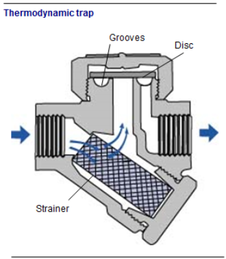
Fig. 21
Il existe une très grande diversité de robinetteries manuelles. Elles dépendent de la technologie, de la fréquence de l’utilisation prévue et de l’éventuelle motorisation ou de la démultiplication pour assister la fermeture de la robinetterie.
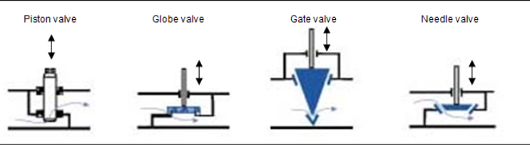
Fig. 22
Sauf pour la robinetterie à pointeau, la fonction première de cette robinetterie est l’isolement des équipements alimentés en vapeur.
Le robinet à pistonLe robinet à piston est certainement le plus utilisé dans l’industrie. Le plus connu est le robinet à piston Klinger® (marque déposée par Trouvay-Cauvin).
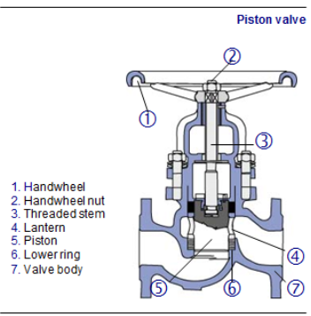
Fig. 23
Lorsque l’on tourne le volant de manœuvre, le mouvement de rotation est transformé en un mouvement de translation par un système de vis. Ce système de vis peut se trouver dans le chapeau ou au centre du volant. Dans ce dernier cas de figure on parle de robinet à tige sortante, la position de la tige indique alors la position de la vanne, mais le robinet possède alors une tige filetée qui dépasse du volant quand la vanne est ouverte. Cela est relativement dangereux pour le personnel qui passe à proximité.
Le déplacement de la tige déplace un piston qui coulisse entre deux bagues d’étanchéité. Ces bagues sont réalisées grâce à un empilage de tresses graphitées et de feuillard d’acier inoxydable. Ces deux bagues sont séparées par une chemise (cylindre percé). La bague du bas assure l’étanchéité de la veine fluide, la bague du haut assure l’étanchéité vers l’extérieur de la vanne. Ces deux bagues sont tassées autour du piston par le fouloir de presse-étoupe au moyen d’un ensemble de boulons.
Les écrous sont séparés du fouloir par des rondelles ressort permettant de reprendre les contraintes dues à la dilatation du robinet à la mise en température.
Ce robinet est assez simple à entretenir ou rénover.
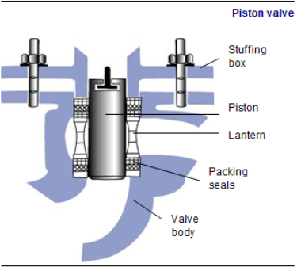
Fig. 24
Le robinet à soupapeLe robinet à soupape contient un opercule qui se déplace de haut en bas et assure l’étanchéité sur un siège métallique usiné. La surface de l’opercule peut être en métal usiné ou revêtue d’un joint. Ces joints sont réalisés en tresses graphitées, dans des Téflons particuliers, des caoutchoucs spéciaux ou en ensembles composites.
L’étanchéité avec joint est en général de meilleure qualité, mais sa caractéristique se dégrade dans le temps. De plus, au-dessus de 160 °C, il existe peu de matériaux souples qui résistent. On trouve donc sur les sites principalement des robinets à étanchéité métal/métal. Ci-après, les différents types de robinets à soupapes.
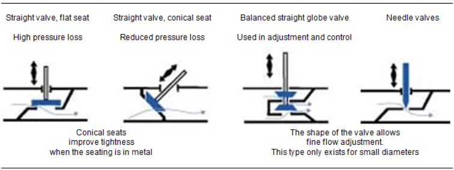
Fig. 25
Moyens techniques pour obtenir l’étanchéité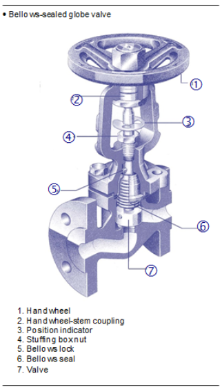
Fig. 26
Étanchéité vers l’extérieurDeux types d’étanchéité sont à distinguer dans un robinet :
Elle consiste à serrer un joint entre les faces d’appui de deux pièces fixes. Il existe quatre grandes familles de joints statiques :
L’étanchéité de la tige de commande de l’obturateur peut être obtenue par joint formé, par soufflet ou par presse-garniture. Le joint formé est du type joint torique, à lobes, à lèvres, plat, etc. Ces joints sont surtout en élastomère. Utilisation : température maximum : 150 °C. Pression < 40 bars.
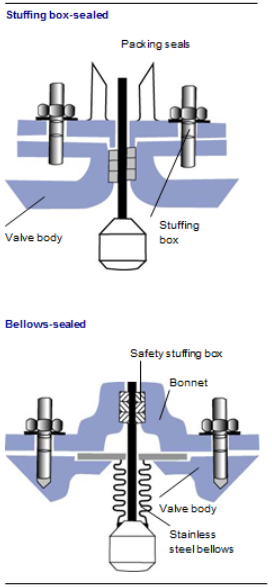
Fig. 27
presse- Étanchéité de tige avec presse-étoupeCette étanchéité est assurée par un ensemble de tresses serrées sur la tige par le fouloir de presse étoupe au moyen de boulons.
Le jeu est diminué par contact direct entre la tige et la paroi. Cette étanchéité est assez simple, mais plus on recherche une étanchéité poussée, plus les tresses seront serrées sur la tige et plus la manœuvre du volant sera dure. Cette étanchéité sera amoindrie à chaque manœuvre et il sera nécessaire de reprendre le serrage du fouloir de presse-étoupe assez régulièrement.
Étanchéité de tige avec souffletPour éviter les inconvénients, d’entretien d’un presse-étoupe classique et la difficulté à tourner le volant de manœuvre, la plupart des fournisseurs proposent de la robinetterie où l’étanchéité vers l’extérieur est réalisée par un soufflet métallique ou plastique, dont une extrémité est soudée sur l’opercule et l’autre serrée sur le corps du robinet.
En cas de rupture du soufflet, un presse-étoupe de sécurité traditionnel est quand même prévue. Sa fonction étant uniquement de limiter les dégâts, il n’a donc pas à être très étanche et ne durcit pas la manœuvre du volant. Ce robinet est plus cher que celui avec une étanchéité traditionnelle.
Robinets à tournant cylindrique ou coniqueOn distingue :
Une bonne étanchéité est obtenue par un ajustement soigné entre le tournant et le corps.
Avantages
Inconvénients
Ces robinets ont pris une place importante en robinetterie industrielle. On distingue les robinets :
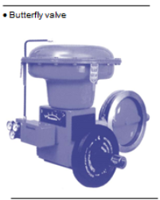
Fig. 28
AvantagesInconvénients
On distingue deux familles : les robinets à vannes à sièges obliques et ceux à vannes à sièges parallèles.
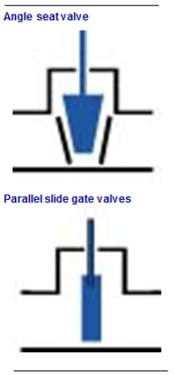
Fig. 29
Vannes à sièges obliquesL’étanchéité est obtenue par coincement de l’opercule entre les portées d’étanchéité obliques du corps.
Vannes à opercule monobloc AvantagesMeilleure tenue en température élevée et en grand diamètre.
Vanne à double operculeL’obturateur est constitué de deux éléments appuyés l’un contre l’autre. Cette disposition permet de compenser la variation angulaire des portées d’étanchéité. Le domaine d’utilisation est plus étendu que celui des vannes à opercule élastique.
Vanne à sièges parallèlesLes disques de l’opercule frottent pendant la totalité de la course sur les sièges. Attention au choix des matériaux utilisés pour éviter une usure prématurée.
Avantages
Action d’un ressort intérieur qui applique les deux disques de l’opercule sur leur siège.
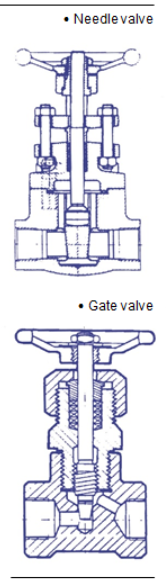
Fig. 30
Vanne à opercule à dispositif de blocageEn position de fermeture, les deux disques de l’obturateur sont bloqués sur leur siège.
Avantages des robinets-vannes
Inconvénients des robinets-vannes
Ce type de robinet offre une étanchéité assez médiocre et reste assez volumineux. Il est assez donc peu utilisé sur les installations de vapeur.
Ce type de robinet à un opercule de forme conique, l’opercule est en général en acier traité en surface et sa fonction première est de créer un réglage de débit de fluide
Les vannes de régulation permettent de régler automatiquement le débit de vapeur de la chaudière et de ses équipements.
Caractéristique des clapetsSelon le type de clapet, une même levée ne laisse pas passer le même débit de vapeur. Il existe trois types de vannes de régulation : à ouverture rapide, à ouverture linéaire, à égal pourcentage.
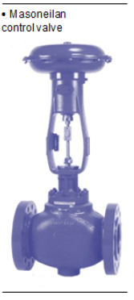
Fig. 31
Ouverture rapideLe clapet est plat. Dès que le clapet se soulève de son siège, le débit est important. Ce robinet ne permet pas un réglage précis du débit.
À ouverture linéaire et à égal pourcentageLa vanne permet un réglage précis du débit fonction de la levée du clapet. Le choix de la vanne se fera en fonction de la caractéristique de l’échangeur.
Sens de fonctionnement des moteursSelon le type de vanne, une montée de la tige donnera une augmentation de débit pour une vanne à mono-siège direct, une diminution de débit pour une vanne à mono-siège inverse.
Les vannes de type mono-siége inverse sont parfois appelées autoclaves, ce qui indique que ces vannes se fermeront d’elles-mêmes, sans moteur, par le seul effet de la pression du fluide.
Fig. 32
Technologie de vanne de régulationLes différentes remarques présentées dans le paragraphe sur les vannes manuelles sont pour la plupart transposables ici. Les particularités des vannes de régulation sont la forme du clapet plus élaborée, en général au détriment des caractéristiques d’étanchéité. Voici ci-dessus les principales formes de clapets présents sur le marché.
Le presse-étoupe (étanchéité de la tige) est en général plus élaboré car la vanne de régulation manœuvrera beaucoup plus souvent que la vanne manuelle. Il est donc nécessaire d’avoir une étanchéité beaucoup plus résistante à l’érosion.
L’acier est le matériau le plus utilisé dans les transports de fluide. Il existe différents modes de fabrication des canalisations : par soudage ou par étirage. Le tube obtenu par soudage est un assemblage de plaques roulées et soudées. Ce type de canalisation ne résiste pas aux fortes pressions nécessaires au fonctionnement de la chaudière vapeur.
Pour les pressions élevées, on utilisera plutôt du tube acier étiré obtenu à partir d’un lingot d’acier chauffé à blanc.
La résistance de la tuyauterie aux fortes pressions dépend de son épaisseur : plus l’épaisseur de la canalisation est élevée, plus elle résiste à la pression du fluide.
L’acier est un métal ferreux. On notera qu’il existe aussi pour les transports de fluide des métaux non ferreux, tels que le cuivre, l’inox ou le nickel, qui résistent particulièrement bien à la corrosion, mais qui, en raison de leur coût élevé, ne sont pas employés dans les usines. La dénomination des canalisations acier est normalisée et facilite leur choix.
Il existe trois méthodes pour raccorder les canalisations :
À chaque extrémité de la canalisation, on réalise un filetage qui permet un montage facile à l’aide de raccords filetés. Le filetage est utilisé lorsque les pressions dans le réseau ne sont pas trop élevées, car la présence des filets réduit la résistance de la tuyauterie. Les tuyaux sont coupés à l’aide d’un coupe-tube et le filetage est réalisé à l’aide d’une filière.
Raccords filetésIl existe un grand choix de raccords filetés pour l’assemblage des canalisations :
Le soudage permet de raccorder les tuyauteries bout à bout et aussi de les assembler aux raccords ou aux équipements tels que les vannes ou les robinets. Par rapport à l’assemblage par filetage ou par bride, le soudage permet :
Les raccords et les accessoires à souder possèdent un évidement dans lequel s’insère le tuyau lisse. Différentes méthodes de soudage sont employées : à l’arc, brasure autogène, hétérogène…
Les bridesLes brides sont montées à chaque extrémité de la canalisation, puis assemblées à l’aide de boulons. Ce mode d’assemblage est beaucoup plus résistant que le filetage. L’étanchéité est meilleure qu’un joint fileté dans la mesure où l’alignement des canalisations est parfaitement réalisé.
Il existe plusieurs types de brides :
Lorsque les matériaux s’échauffent, ils se dilatent ou s’allongent. Rien ne résiste à la dilatation des matériaux et pour absorber le phénomène de dilatation, on a recours à des lyres de dilatation ou à des joints d’expansion. Dans le cas des lyres, l’allongement est absorbé par la flexion des bras de la lyre.
Dans le cas des joints d’expansion, deux parties emboîtées l’une dans l’autre coulissent. Le joint d’expansion nécessite l’emploi de lubrifiant et de garnitures d’étanchéité.
L’ensemble de la tuyauterie doit être supporté afin que sa masse ne repose pas sur les équipements de l’usine. Les supports sont judicieusement placés pour éviter tout fléchissement.
En matière de supports, il existe les colliers de suspension, les supports et consoles de fixation.
Certaines installations ne peuvent être mises à l’arrêt en cas de défaillance du réseau de distribution EDF (pannes ou autre), soit pour des raisons de sécurité humaine, soit pour des raisons économiques. La solution consiste alors à assurer la production d’énergie électrique de façon autonome, en se substituant au réseau EDF.
Pour satisfaire cette contrainte, il existe plusieurs types d’appareillage. Les plus utilisées sont :
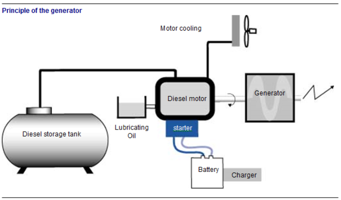
Fig. 33
Les différents éléments constitutifsCet équipement est constitué par :
itemize
Un alternateur de puissance adapté aux besoins de l’installation, équipé d’un système de régulation de tension et de fréquence. itemize
Au niveau de la liaison électrique, on retrouve le plus souvent les équipements suivants :
Après une détection d’absence de tension sur le secteur (20 secondes), le groupe électrogène démarre (50 secondes), le réseau de délestage se met en configuration et le disjoncteur Normal-Secours permute, le moteur prend la charge plus ou moins progressivement par la fermeture des disjoncteurs prioritaires (relestage, 210 secondes).
La mise en rotation de l’arbre moteur, permet à l’alternateur d’être la source de phénomènes magnétiques assurant la transformation de l’énergie mécanique du moteur en énergie électrique sous forme de tensions alternatives triphasées.
ConclusionCet équipement est très utilisé dès que la puissance de secours est importante ou que le risque de coupure est fréquent.
En le dimensionnant de façon précise, on peut satisfaire les besoins de toute installation ; en revanche, on ne peut assurer un secours sans interruption. En effet, de par son principe de fonctionnement, il faut qu’il y ait absence de secteur pour que le groupe électrogène démarre. Pour répondre à cette contrainte supplémentaire, on utilise les alimentations sans interruption, notées ASI, appelées aussi « onduleurs ».
Cet équipement est utilisé dans le but d’assurer un secours en cas de coupure du réseau distributeur, mais il est aussi préconisé afin d’obtenir un « courant propre », c’est-à-dire sans trop d’harmoniques (cf. module 17). Il est pratiquement indispensable pour l’alimentation des salles informatiques ou de gros ordinateurs.
Les différents éléments constitutifsCet équipement est constitué de trois éléments principaux :
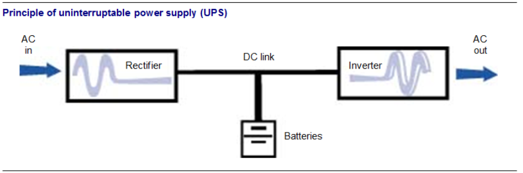
Fig. 34
FonctionnementLorsque le secteur est présent, il assure la charge des accumulateurs. Le passage au travers des différents éléments constitutifs de l’ASI assure une alimentation « saine » et stable du réseau situé en aval.
Lorsque le secteur vient à manquer, les batteries d’accumulateurs prennent le relais de façon instantanée, sans coupure, et assurent une alimentation « saine » et stable du réseau situé uniquement en aval.
Bien entendu, si l’absence du secteur vient à durer, les batteries se déchargent et l’alimentation du réseau situé en aval n’est plus garantie.
ConclusionPris séparément, GE et ASI ont des avantages complémentaires. C’est pourquoi, sur les installations secourues, on retrouve le plus souvent ces deux équipements. Les ASI permettent l’alimentation sans interruption des réseaux sensibles, le GE permet l’alimentation des autres réseaux plus puissants, tout en assurant la relève des batteries d’accumulateurs.
L’opération de maintenance et d’entretien primordiale pour ces équipements consiste à vérifier périodiquement que les batteries d’accumulateurs sont bien en charge, aussi bien sur les ASI que sur le ou les GE.
Les moyens de défense contre l’incendie ne s’improvisent pas. Pour combattre le feu avec le minimum de dégâts, il importe d’agir vite, ce qui implique :
« Le feu s’éteint dans la première minute avec un verre d’eau, dans la deuxième minute avec un seau d’eau, dans la troisième minute avec une tonne d’eau, après… »
Le développement d’un feu se caractérise par différentes phases :
Selon le type de feu, ces quatre phénomènes se produisent plus ou moins tôt et de façon plus ou moins importante. C’est pourquoi une bonne évaluation des risques permet de choisir le détecteur le mieux adapté aux feux susceptibles de se déclarer dans les divers secteurs d’un bâtiment. Pour cela, on distingue trois grands types de détecteurs :
À ce jour, seulement un faible pourcentage de nos UIOM est équipée de détecteurs. Ces détecteurs se trouvent dans des endroits bien précis : hall de déchargement-fosse, local compresseur, local turbo, zones de stockage en tous genres, trappes de désenfumage ou pyrodômes.
Détecteurs de fuméeLe détecteur ionique
Sensible à tous les types d’aérosols (particules invisibles, fumées claires ou sombres…), il agit comme un véritable « nez électronique ». Jusqu’à ces dernières années, c’était le détecteur le plus couramment utilisé (environ 80\
Le détecteur optique à diffusion de lumière (effet Tyndall)
Son principe de fonctionnement consiste dans la visualisation d’un faisceau de lumière par la charge d’aérosols qu’il traverse (fumées ou particules). Lorsqu’un rayon lumineux rencontre un aérosol, la lumière est diffusée dans toutes les directions et captée par une cellule. Cette cellule génère un signal électrique qui déclenche l’alarme. Ce détecteur ne convient pas aux atmosphères poussiéreuses (hall de réception, zone de tri…).
Le détecteur optique linéaire (à absorption ou à atténuation)
Ce matériel comporte un émetteur de faisceau infrarouge et un récepteur. Lorsque le faisceau rencontre des aérosols, le rayonnement reçu est atténué. Si celui-ci s’affaiblit au-dessous d’une valeur déterminée, l’alarme se déclenche.
On utilise surtout ce type de détecteur pour les grands volumes, lorsque le sol est encombré ou si l’installation d’un détecteur ponctuel est difficile dans la configuration du lieu. Dans nos métiers, les détecteurs optiques, particulièrement sensibles aux poussières, provoquent très fréquemment de fausses alarmes.
Détecteurs de chaleur prédéfinieLe détecteur thermostatique
Les détecteurs thermostatiques déclenchent l’alarme lorsque la température ambiante atteint une valeur fixée à l’avance, souvent lorsque le feu est déjà très important. Ce type de détecteur peut être utilisé sur les fosses à ordures ménagères et sur certains centres de compostage.
Le détecteur thermovélocimétrique
Ces détecteurs de chaleur réagissent en fonction de la vitesse d’élévation de la température, d’où leur nom de détecteurs thermovélocimétriques. Si la température varie fortement en peu de temps, l’alarme est donnée. Ce type de détecteur est peu ou pas utilisé dans nos UIOM.
Détecteurs de flammesLe détecteur optique à infrarouge ou ultraviolet
Ces détecteurs réagissent au rayonnement modulé émis par les flammes, sans tenir compte des nombreux rayons parasites dans l’environnement de l’entreprise (soleil, appareils de chauffage, lampes à incandescence, arcs électriques…). Ils mettent en œuvre un traitement du signal très élaboré.
Les détecteurs optiques de flammes sont généralement utilisés dans les locaux de grand volume et sont adaptés à la surveillance des fosses de réception des déchets.
Les évolutionsLes détecteurs deviennent multicritères. Plusieurs capteurs ont été intégrés dans ces détecteurs conventionnels, les signaux de ces capteurs sont combinés pour en déduire l’information « feu » selon des règles définies. Ces systèmes sont conçus pour limiter les alarmes injustifiées.
Dans l’entreprise, les moyens de lutte contre le feu lors de la première intervention sont principalement des extincteurs mobiles (portatifs et sur roues) et des robinets d’incendie armés.
ExtincteursMoyen de première intervention par excellence, l’extincteur portatif a souvent un rôle décisif dans la lutte contre l’incendie. Chaque année, il vient à bout d’un nombre considérable de foyers naissants qui, en son absence, auraient dégénéré en sinistres. C’est pourquoi la rapidité d’action est primordiale Dans d’autres cas, il permet de limiter les dégâts dans l’attente de la mise en œuvre de moyens plus puissants.
Un extincteur est un appareil qui permet de projeter et de diriger sur un foyer d’incendie un agent extincteur. La projection hors de l’appareil est obtenue par l’effet d’une pression intérieure qui peut être due à la compression préalable de l’agent extincteur ou à la libération d’un gaz de chasse au moment de la mise en œuvre. L’attaque du feu s’effectue toujours à sa base. Pour attaquer efficacement un début d’incendie, il faut disposer de l’agent extincteur le mieux approprié à la nature du feu.
La norme AFNOR NF EN 2 distingue quatre classes de feu (voir tableau) : A. Feux secs de solides, B. Feux gras de liquides ou solides liquéfiables C. Feux de gaz D. Feux de métaux
L’extincteur est essentiellement caractérisé en fonction de l’agent extincteur qu’il contient. À l’heure actuelle, on distingue :
L’eau est le plus utilisé des agents extincteurs car on peut toujours, sauf cas exceptionnel, s’en procurer. Elle agit doublement :
L’eau pulvérisée augmente considérablement l’effet de refroidissement par une vaporisation plus intense et diminue l’effet du rayonnement.
Projetée au moyen de lance, en « jet plein » (ou « jet bâton »), l’eau convient bien aux feux de classe A. Elle produit un effet mécanique qui favorise la pénétration du foyer et la dispersion des matériaux. L’utilisation du « jet plein » est à déconseiller sur les installations électriques.
Attention !
L’eau est strictement prohibée comme moyen d’extinction dans certains types d’industries (fonderies d’aluminium, par exemple), en particulier lorsque sa vaporisation trop rapide entraîne la projection de matériaux liquides (métaux, sels fondus…).
Eau et additifsPour accroître le pouvoir extincteur de l’eau, on peut lui adjoindre des tensioactifs (composé chimique susceptible d’augmenter les propriétés d’étalement, de mouillage d’un liquide). L’eau et ces additifs se rencontrent principalement dans les extincteurs portatifs pour agir sur les feux des classes A et B.
Les poudresLa projection de la poudre est obtenue par la pression d’un gaz auxiliaire. Les appareils à poudre agissant principalement par étouffement et/ou inhibition sont plus efficaces en local clos qu’en plein air. Bien qu’ils puissent être utilisés en présence de courant électrique, il est déconseillé de les mettre en œuvre directement sur le matériel électrique (risques de détérioration). La majorité des poudres ne présentent qu’un faible risque toxicologique pour l’homme ; toutefois, elles sont en général légèrement irritantes pour les voies respiratoires et les muqueuses. La projection de la poudre dans un local diminue fortement la visibilité.
Gaz inertesL’extinction avec les gaz inertes (dioxyde de carbone, azote, leurs mélanges…) est obtenue par diminution de la teneur en oxygène dans l’atmosphère.
Quelle que soit la nature de l’agent extincteur qu’ils contiennent, les appareils sont répartis en deux grandes catégories, en fonction de leur masse en ordre de marche :
Les extincteurs sont également caractérisés par :
Un extincteur doit être impérativement adapté à la nature des combustibles et aux risques encourus. La norme NF EN 2 distingue quatre classes de feux :
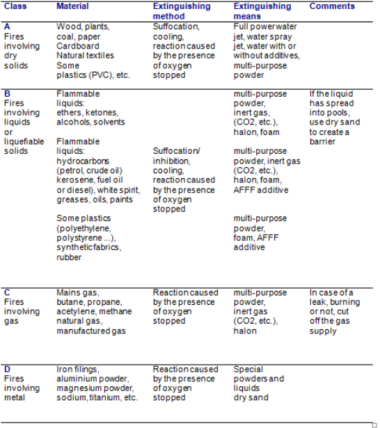
Fig. 35
Les robinets d’incendie armés (RIA)Les postes d’incendie, généralement désignés sous le sigle RIA (robinets d’incendie armés), sont des installations fixes de premier secours contre l’incendie. Destinés à être mis en œuvre par une seule personne dès l’alerte, ils sont au tout premier rang des matériels d’autoprotection.
Le robinet d’incendie armé se compose :
Le réseau d’eau public ne peut être utilisé que si le débit requis par l’installation n’excède pas 80\
Le niveau de l’eau des réservoirs et bacs doit pouvoir être vérifié par un indicateur visible de l’extérieur et l’insuffisance d’eau signalée par un appareil donnant une alarme audible. Réservoirs et bacs doivent être protégés contre le gel.
La pression minimale au robinet diffuseur du RIA le plus éloigné doit être de 0,25 MPa (2,5 bars), avec généralement un maximum de quatre robinets en fonctionnement simultané.
Les robinets d’incendie armés permettent, lorsque l’emploi de l’eau n’est pas interdit, une action souvent puissante et efficace lors de la première intervention, dans l’attente des moyens plus importants. Ils font partie des installations fixes.
Ils doivent :
Les RIA doivent être implantés à des emplacements abrités du gel et à proximité des accès. Ils sont signalés de façon claire.
Les colonnes sèches ou en charge (dites humides)Les colonnes sèches et les colonnes en charge (dites colonnes humides) sont des tuyauteries fixes et rigides installées à demeure dans les constructions et destinées à être raccordées aux tuyaux des sapeurs-pompiers. Les colonnes sèches sont mises en charge au moment de l’emploi. Les colonnes en charge (dites colonnes humides) sont reliées à des réservoirs et à des pompes, à des surpresseurs ou à tout autre dispositif permettant d’alimenter les lances des sapeurs-pompiers.
Les colonnes humides ou en chargeUne installation de protection incendie par colonne en charge comprend au moins :
Ces installations permettent d’accélérer le temps d’intervention des services de secours en évitant des déploiements verticaux de tuyaux souples.
Les colonnes sèchesUne colonne sèche comprend :
Le rôle d’une installation de sprinklers est de déceler un foyer d’incendie, de donner une alarme et de l’éteindre à ses débuts ou au moins de le contenir de façon que l’extinction puisse être menée à bien par les moyens de l’établissement protégé ou par les sapeurs-pompiers.
La détection est faite par les sprinklers, des détecteurs thermiques à température fixe. Le choix des températures et des emplacements est fonction des caractéristiques des locaux et de leur utilisation.
L’alarme est donnée par l’intermédiaire d’une turbine hydraulique actionnant le gong d’alarme et par un pressostat de report d’alarme électrique placé à chaque poste de contrôle. L’extinction est effectuée par l’eau déversée par les sprinklers.
Le débit d’eau, le type de pulvérisation, la surface d’arrosage de chaque sprinkler sont fonction du feu à éteindre. L’efficacité maximum est obtenue quand tout incendie peut être combattu par arrosage à ses débuts, quel que soit son emplacement et avec la quantité d’eau nécessaire.
Systèmes spéciaux Canons (à eau ou à mousse)L’installation de canons à eau permet de protéger efficacement les fosses de réception des ordures ménagères et les trémies d’enfournement de nos incinérateurs. L’eau pulvérisée est toujours accompagnée d’un additif. Le pourcentage d’additif varie selon l’effet recherché :
Généralement, lorsque les canons de protection des fosses, situés en partie haute au niveau des trémies, sont actionnés par le personnel, en salle de commande, ils permettent d’attaquer le feu de façon très précise et rapide.
Les canons à mousse, utilisés pour la protection des trémies d’enfournement, déversent très rapidement une quantité de mousse suffisante qui permet d’étouffer le feu avant que ce dernier ne crée de graves dégâts. La mousse est une quantité de goutte d’air mélangée à un liquide et son avantage, dans le cas des trémies, est que le feu est étouffé, mais surtout que le choc thermique dans le four est minime, donc il y a peu de risque de bris de l’outil, des réfractaires notamment.
Ces types d’équipements nécessitent un investissement relativement important mais permettent d’éviter de lourdes pertes en cas d’incendie.
Rideaux d'eau ou drenchersCommunément considérés comme synonymes, ces noms font Très souvent considérées synonymes, ces appellations désignent toutefois deux systèmes de protection différents ayant le même but. Le drencher (mot anglais signifiant « grosse averse ») désigne l’arrosage d’un support par de l’eau.
Le rideau d’eau est une projection de fines gouttelettes d’eau sur une certaine longueur avec une certaine largeur formant une sorte d’écran protecteur. Les rideaux d’eau sont destinés à compléter les appareils de secours, mais en aucun cas à les remplacer ; ils ne peuvent pas non plus se substituer à un mur ou à une cloison résistant au feu.
Autres moyensLes autres moyens utilisables pour une intervention immédiate peuvent être :
Généralement installés à l’extérieur des locaux, les bouches et poteaux d’incendie peuvent être utilisés par le personnel, mais surtout par les pompiers qui y raccordent leur matériel. Ils doivent être incongelables, visibles et accessibles en toutes circonstances, et vérifiés périodiquement.
Diverses installations fixes d’extinction, généralement automatiques mais parfois manuelles, peuvent être réalisées lorsque les risques sont graves ou ponctuels (brûleurs de chaudières, stockage de produits inflammables…). Ces procédés permettent d’éteindre un foyer d’incendie par une intervention précoce et rapide, en l’absence des occupants.